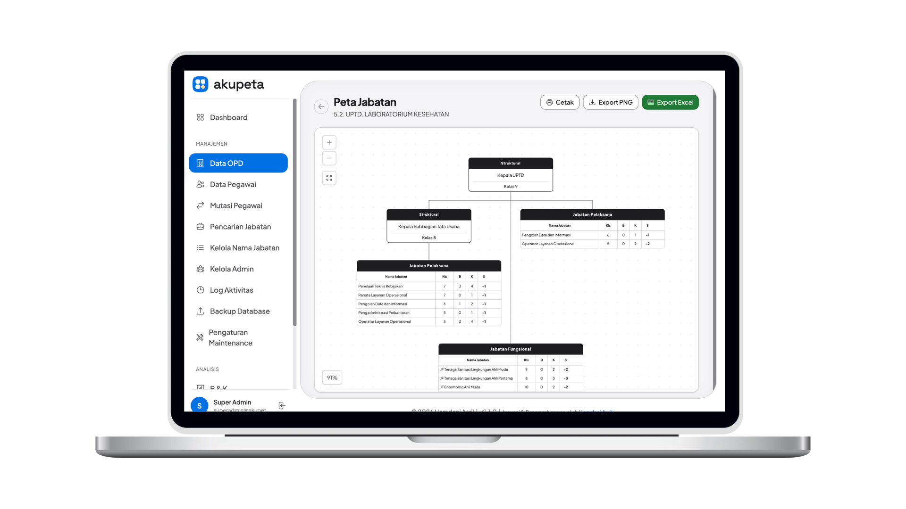
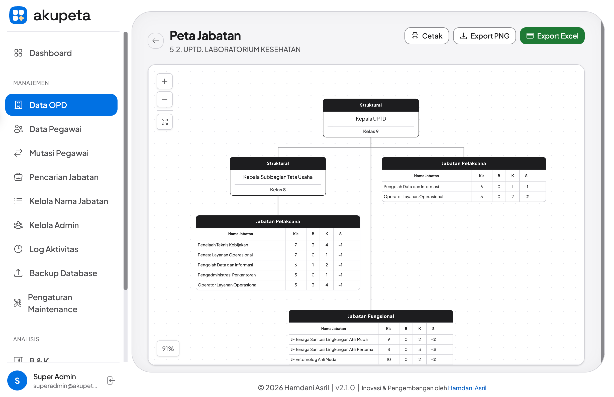

← Neko Chillin’ / ✓ Nº 01 · Web app
Satu peta,
akupeta.
Aplikasi Kendali Utama Peta Jabatan: peta jabatan dan data kepegawaian OPD di satu tempat.

Susunan organisasi diubah sekali, bagannya langsung ikut.
- 1tempat, gantinya berkas yang terpisah-pisah.
- 6fungsi utama, dari bagan sampai laporan.
- 4peran: Super Admin, Organisasi, BKPSDM, OPD.
- 38halaman admin dengan satu kerangka.
01 / Fungsi
Enam hal yang diurus.
-
Bagan hierarki
Struktur jabatan jadi bagan, siap cetak.
-
Data ASN
Pegawai beserta jabatannya.
-
Mutasi
Perpindahan antarjabatan.
-
Bezetting
Kebutuhan lawan realisasi.
-
Laporan
Termasuk analisis kesenjangan.
-
Riwayat
Log aktivitas dan cadangan data.

02 / Desain
Tenang, padat, satu aksen biru.
Palet
- Kanvas
#F5F5F7 - Tinta
#1D1D1F - Aksen
#0071E3 - Berhasil
#34C759 - Peringatan
#FF9500 - Gagal
#FF3B30
Huruf
akupeta
Plus Jakarta Sans untuk isi, angka tabular di tabel.
Sekarang di versi 2.1.1, dan masih dirawat.
✦ Catatan
Ini aplikasi internal pemerintahan, jadi tidak ada tautan untuk dicoba.
Nekonya lagi melek, nih.
Mau bikin apa?Barang baru, barang lama yang mau dibongkar, atau ide yang agak aneh — ceritain aja, nanti kita otak-atik bareng.